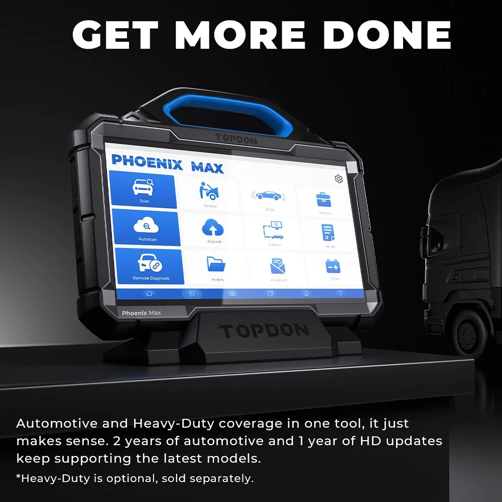
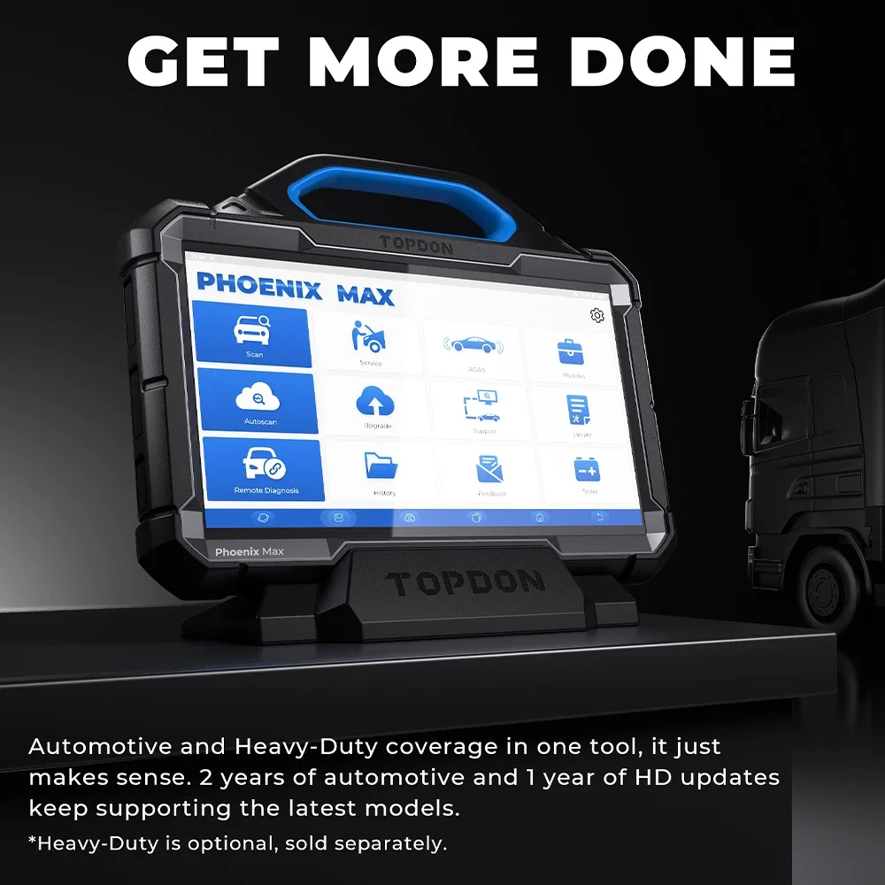

TOPDON Phoenix Max Mise à jour gratuite Outil de diagnostic automobile professionnel Scanner 2
Découvrez les secrets de votre véhicule avec le TOPDON Phoenix Max, un outil de diagnostic automobile puissant et intuitif qui met des diagnostics de qualité professionnelle à votre portée. Ce scanner complet vous permet de localiser les problèmes rapidement et efficacement, vous faisant ainsi gagner du temps et de l'argent sur les réparations coûteuses.
Grâce à ses fonctionnalités avancées et à ses mises à jour gratuites à vie, le Phoenix Max reste à la pointe des dernières technologies automobiles. Accédez à une multitude d'informations de diagnostic, notamment :
- Flux de données en direct : Surveillez les paramètres critiques du moteur en temps réel pour comprendre les performances de votre véhicule.
- Lecture et effacement des codes d'erreur : Identifiez et résolvez facilement les codes d'erreur pour remettre votre voiture en parfait état de marche.
- Mises à jour gratuites à vie : Gardez une longueur d'avance grâce à l'accès aux dernières données et améliorations logicielles.
Le Phoenix Max dispose d'une interface claire et intuitive, facile à utiliser aussi bien pour les mécaniciens expérimentés que pour les bricoleurs. Sa conception robuste garantit sa durabilité, ce qui en fait un compagnon fiable pour les années à venir.
Le TOPDON Phoenix Max est un outil de diagnostic automobile puissant et polyvalent, conçu pour aider les mécaniciens, les techniciens et les passionnés de bricolage à diagnostiquer et réparer les véhicules avec précision. Grâce à sa couverture complète des marques et modèles de voitures, ses capacités de diagnostic avancées et son interface conviviale, le Phoenix Max vous permet d'effectuer un large éventail de réparations en toute confiance.
- Mises à jour logicielles gratuites à vie : Bénéficiez des dernières informations sur les véhicules et les protocoles de diagnostic grâce aux mises à jour logicielles gratuites à vie. Cela garantit la compatibilité de votre scanner avec les modèles et technologies automobiles les plus récents.
- Diagnostic complet du système : effectuez un diagnostic complet de tous les principaux systèmes du véhicule, notamment le moteur, la transmission, l’ABS, le SRS, le TPMS, etc.
- Fonctions de diagnostic avancées : accédez à des fonctions de diagnostic avancées telles que la diffusion de données en direct, l’analyse d’images figées, la lecture et l’effacement des codes d’erreur, ainsi que l’activation des composants.
- Lecture et effacement des codes : lisez et effacez rapidement les codes d’erreur génériques et spécifiques au constructeur provenant de divers systèmes du véhicule. Comprendre la signification des codes permet d'identifier efficacement la cause première des problèmes.
- Diagnostics de niveau constructeur : Le Phoenix Max offre des diagnostics de niveau constructeur, donnant accès aux mêmes informations et protocoles que ceux utilisés par les ateliers de réparation professionnels.
Le TOPDON Phoenix Max possède des spécifications robustes conçues pour des performances fiables et une utilisation simplifiée :
- Écran couleur : Profitez d'une visualisation claire et concise des données du véhicule sur l'écran couleur éclatant.
- Interface conviviale : Naviguez facilement dans les menus et les fonctions de diagnostic grâce à l'interface intuitive et conviviale.
- Connectivité sans fil : Connectez-vous sans fil au port de diagnostic embarqué (OBD) de votre véhicule pour un transfert de données simplifié.
Le TOPDON Phoenix Max offre de nombreux avantages qui en font un outil indispensable pour tous ceux qui travaillent sur des véhicules :
- Gain de temps Diagnostics : Identifiez rapidement et précisément les problèmes de votre véhicule, ce qui vous permet de gagner un temps précieux et d'économiser vos efforts lors des réparations. Solution économique : En vous permettant de diagnostiquer et de réparer vous-même les problèmes, le Phoenix Max contribue à réduire votre dépendance aux services de mécaniciens coûteux. Performances du véhicule améliorées : Retrouvez les performances optimales de votre véhicule en traitant avec précision les problèmes mécaniques sous-jacents. Maîtrise et connaissances : Approfondissez votre compréhension des systèmes de votre véhicule et de leur fonctionnement grâce au processus de diagnostic. Utilisation : Utiliser le TOPDON Phoenix Max est simple : Connectez le scanner au port OBD de votre véhicule à l'aide du câble fourni. Mettez le contact et sélectionnez le module de diagnostic souhaité dans le menu du scanner. Suivez les instructions à l'écran pour effectuer diverses fonctions de diagnostic, telles que la lecture des codes, l'affichage des données en direct ou l'activation des composants. Interface intuitive vous guide à chaque étape, garantissant une expérience fluide et conviviale.